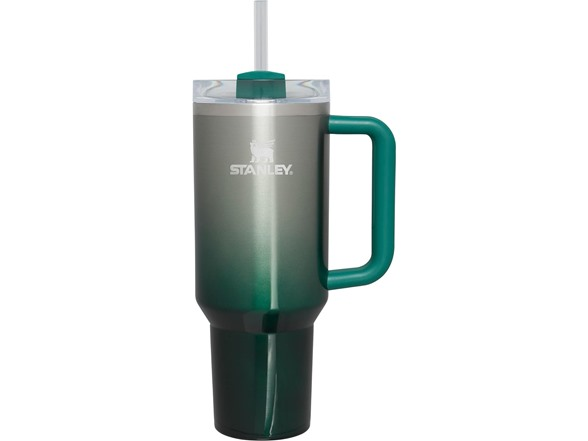
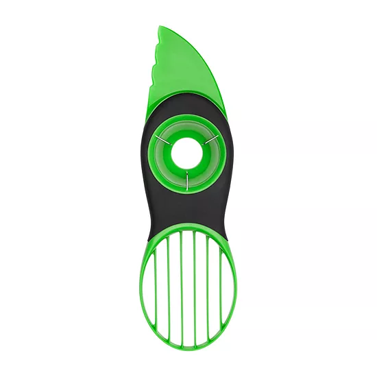
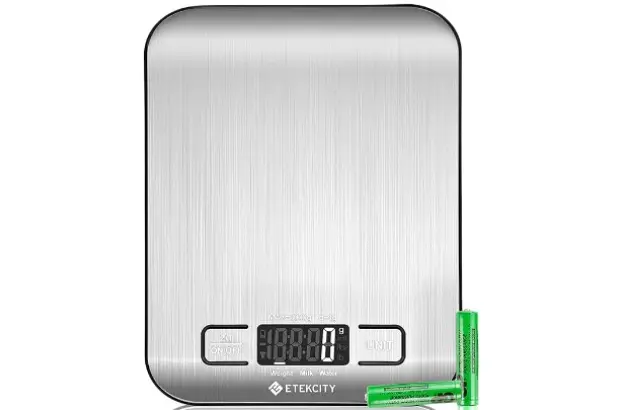
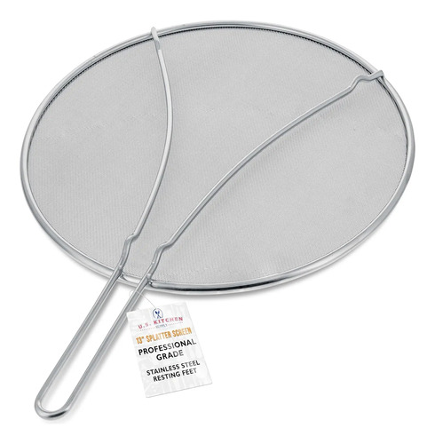
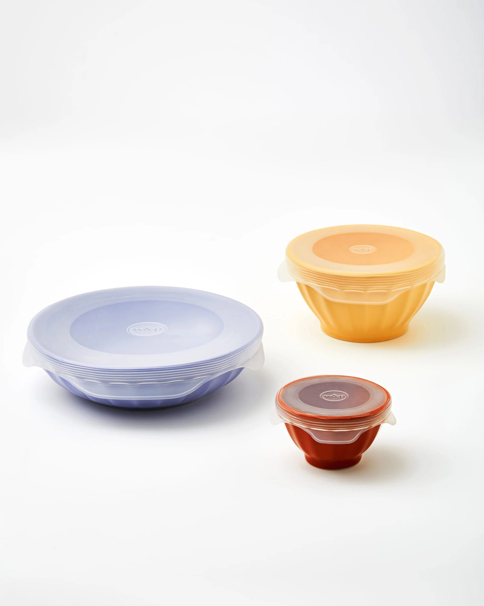
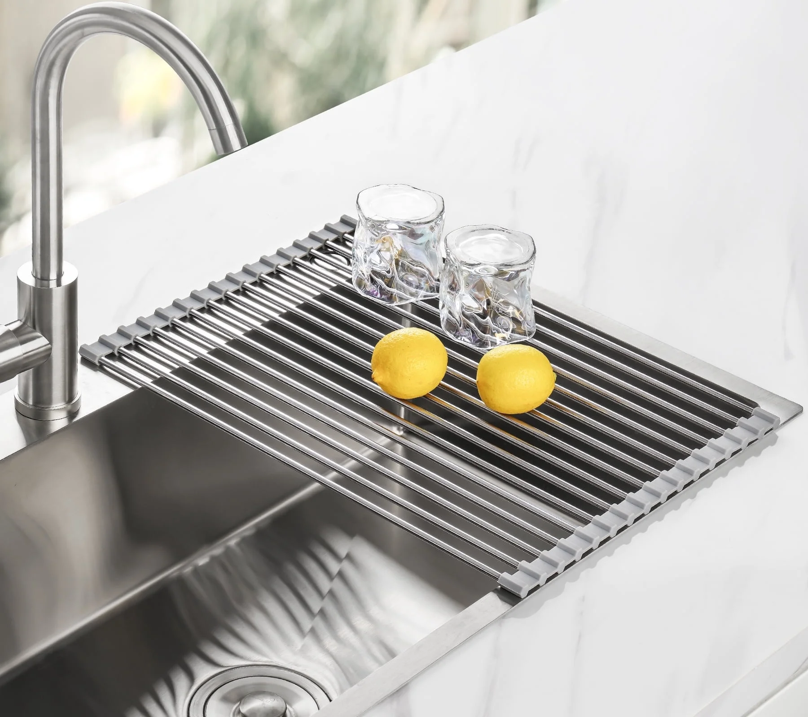
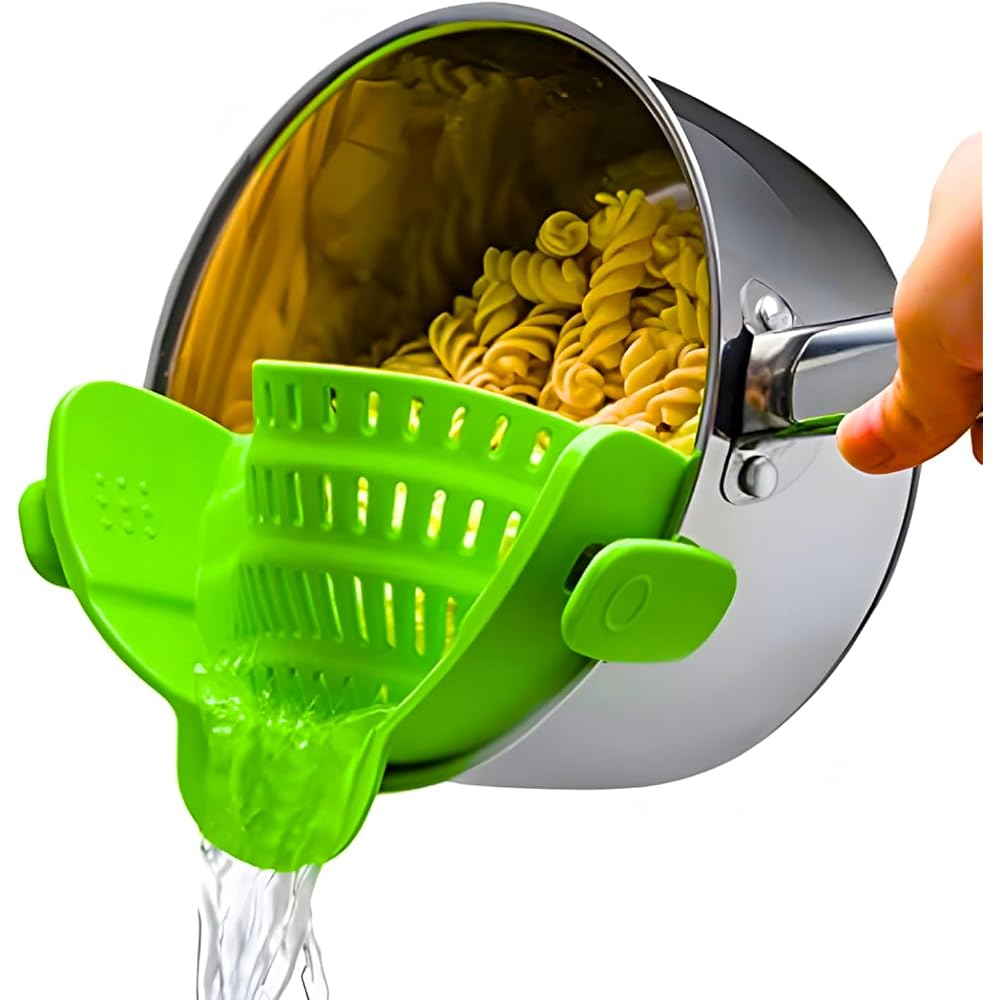

The 10 Best Kitchen Gadgets Under $25 That People Actually Use (2026 Gift Guide)
Every December the same thing happens: you need a gift for someone who loves cooking, your budget is $25, and you're staring at 40,000 results for "kitchen gadgets" on Amazon. Most of them are junk — single-use novelties that get used once and live in a drawer forever.
This guide is the opposite of that. Every gadget below is under $25, from a recognizable brand, and — most importantly — it's the kind of thing people reach for weekly, not yearly. These are the gifts that get a text message in January saying "okay, I use this every day."
How we picked these
- Under $25, really. No "was $60, now $24.99 for the next 40 minutes" games.
- Recognizable brands or proven bestsellers. No-name gadgets with 14 reviews didn't qualify.
- Weekly-use potential. A gadget has to earn its drawer space.
We did not accept payment for placement, and we re-check prices before the holiday season each year.

1. DASH Rapid Egg Cooker — the gift that converts skeptics
Makes hard-boiled, poached, scrambled eggs, and omelets with almost zero effort: add water, press a button, walk away. Consistently one of Amazon's best-selling kitchen gadgets because it solves a real daily annoyance.
- Pros: dead simple; faster than boiling a pot; auto-shutoff; includes poaching and omelet trays.
- Cons: fits about half a dozen eggs — not for big-batch meal prep; the buzzer is loud.
Best for: the person who "can't cook" but wants better breakfasts.
Check current price
2. Mueller Pro-Series Vegetable Chopper — the meal-prep workhorse
Dices onions, peppers, potatoes, and more into uniform pieces in seconds, with interchangeable blades for different cuts. Anyone who cooks regularly knows the worst part is the chopping.
- Pros: turns 15 minutes of chopping into two; sharp, replaceable blades; container catches everything.
- Cons: hand-wash the blades (they're razor sharp); bulky if your drawers are shallow.
Best for: anyone who meal-preps or has ever cried over an onion.
Check current price
3. OXO Good Grips 3-in-1 Avocado Slicer — small, perfect, cheap
Splits, pits, and slices an avocado with one tool, for less than the brunch it helps you make. OXO's Good Grips line is ergonomically designed and built to last.
- Pros: does its one job flawlessly; dishwasher safe; the pitting tool actually works.
- Cons: it's a unitasker — but for a food people eat weekly.
Best for: the avocado toast devotee. You know who they are.
Check current price
4. Etekcity Digital Kitchen Scale — the baker's secret weapon
Measuring by weight beats measuring by cups, every time. A digital scale makes baking more consistent, portioning easier, and coffee better (yes, really — weigh your beans).
- Pros: improves baking results immediately; tare function; slim enough to store anywhere.
- Cons: batteries need replacing eventually; stick with a well-reviewed brand for fast readings.
Best for: bakers, coffee nerds, and anyone tracking portions.
Check current price
5. Magnetic Measuring Spoons (dual-sided) — the drawer upgrade
Magnets keep the set nested together in the drawer, and dual round-and-oval ends fit into spice jars of any shape. Stainless steel doesn't stain or absorb odors.
- Pros: never dig for the ¼ teaspoon again; fit narrow spice containers.
- Cons: slightly heavier than plastic sets.
Best for: anyone whose measuring spoons are scattered across three drawers.
Check current price
6. U.S. Kitchen Supply 13" Splatter Screen — the $10 problem-solver
Sits over the pan and stops grease spray while letting steam escape, so food still crisps instead of steaming. Frying bacon, searing chicken, grilled cheese — all of it sprays less.
- Pros: cuts stovetop cleanup dramatically; fine mesh doesn't trap steam; dishwasher safe.
- Cons: one more thing to wash; doesn't fit very small saucepans.
Best for: anyone who cooks with oil regularly and hates wiping down the stove.
Check current price
7. W&P Silicone Stretch Lids (set of 6) — say goodbye to plastic wrap
Flexible silicone lids stretch over bowls, half-cut produce, and open cans for an airtight seal. Reusable, dishwasher safe, and they actually stay on.
- Pros: reusable hundreds of times; fit a wide range of sizes; microwave and dishwasher safe.
- Cons: very large bowls can defeat them; need a clean, dry rim to seal.
Best for: the eco-conscious cook, or anyone tired of wrestling with cling film.
Check current price
8. Tomorotec Roll-Up Dish Drying Rack — the small-kitchen hero
Sits over the sink, giving you extra drying and prep space that vanishes when you roll it up. In a small kitchen, counter space is gold — this gadget manufactures more of it.
- Pros: creates usable space over the sink; doubles as a trivet and rinse station; rolls away to almost nothing.
- Cons: only as wide as your sink; for dishes and prep, not heavy cookware.
Best for: apartment dwellers and anyone whose counter is permanently full.
Check current price
9. ThermoMaven F1 Instant-Read Meat Thermometer — the end of dry chicken
The difference between juicy chicken and dry chicken is about 10 degrees, and no amount of poking it with a fork tells you which side you're on. Takes the guesswork out in seconds.
- Pros: readings in seconds; takes the anxiety out of cooking meat; also great for candy-making and bread.
- Cons: you'll wonder how you cooked without one — not really a con.
Best for: grillers, roast-chicken makers, and chronic overcookers.
Check current price
10. Kitchen Gizmo Snap N Strain — the pasta-night upgrade
Clips onto the side of any pot so you can drain pasta, potatoes, or vegetables without hauling out a colander — or burning your hands. The gadget people buy on a whim and use three times a week.
- Pros: fits most pot sizes; heat-resistant silicone; stores flat in a drawer.
- Cons: needs a firm clip on very full pots; not for fine-mesh straining.
Best for: pasta lovers and small kitchens where a colander is one bulky item too many.
Check current priceQuick comparison
| Gadget | Best for | Why it wins |
|---|---|---|
| DASH Rapid Egg Cooker | Breakfast people | Zero-effort perfect eggs |
| Mueller Vegetable Chopper | Meal preppers | 15 minutes of chopping → 2 |
| OXO Avocado Slicer | Avocado devotees | One perfect job |
| Etekcity Food Scale | Bakers | Consistency you can taste |
| Magnetic Measuring Spoons | Organized cooks | Never lose the ¼ tsp again |
| Splatter Screen | Stovetop cooks | No more grease cleanup |
| W&P Stretch Lids | Eco-conscious kitchens | Ditch the plastic wrap |
| Roll-Up Dish Rack | Small kitchens | Manufactures counter space |
| Instant-Read Thermometer | Meat cooks | No more dry chicken |
| Clip-On Strainer | Pasta nights | Ditch the bulky colander |
Frequently asked questions
What is the best kitchen gadget under $25 to give as a gift?
For a safe crowd-pleaser, the DASH Rapid Egg Cooker and the Mueller Vegetable Chopper are the two most-gifted items on this list. They're from recognizable brands, solve obvious problems, and work for beginners and experienced cooks alike. Buying for a specific person? Match the gadget to their habit — the thermometer for the griller, the roll-up rack for the small-kitchen cook.
Are cheap kitchen gadgets actually worth it?
Some are, most aren't. The difference is whether the gadget replaces a recurring annoyance or just looks fun in a product photo. Everything on this list earned its spot by being something people use weekly. A good rule of thumb: if you can picture the recipient using it next Tuesday — not just on Christmas morning — it's worth it.
What kitchen gadget does everyone need but nobody buys for themselves?
The instant-read meat thermometer. Almost nobody buys one for themselves, and almost everyone who gets one says it changed how they cook. It's the highest "why didn't I own this already" ratio of anything under $25.
What are good stocking stuffer kitchen gadgets?
The OXO Avocado Slicer, magnetic measuring spoons, and clip-on strainer all fit in a stocking and cost well under $25. Small, useful, and no learning curve.
Do these gadgets work for small kitchens?
Yes — most of the list was chosen with small kitchens in mind. The roll-up dish rack, clip-on strainer, and magnetic measuring spoons save space rather than consuming it. If space is tight, avoid the egg cooker and chopper (both need a home) and lean toward the flat-storing picks.
How long do budget kitchen gadgets last?
Simple tools (splatter screens, measuring spoons, strainers) last for years. Anything with blades or electronics lasts longer when you buy the established brand version rather than the cheapest listing — which is why this guide favors recognizable brands over rock-bottom prices.
The bottom line
The best kitchen gift under $25 isn't the cleverest gadget — it's the one that gets used. Pick the item on this list that matches something the recipient already does every week, and you'll give the rare gift that earns its drawer space.
Prices on Amazon change frequently. We re-check this guide before each holiday season, but always confirm the current price on the product page before you buy. As an Amazon Associate, we earn from qualifying purchases made through the links above.